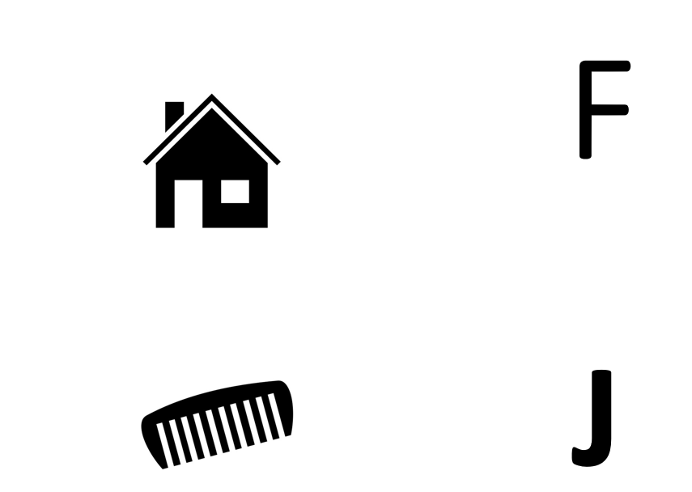
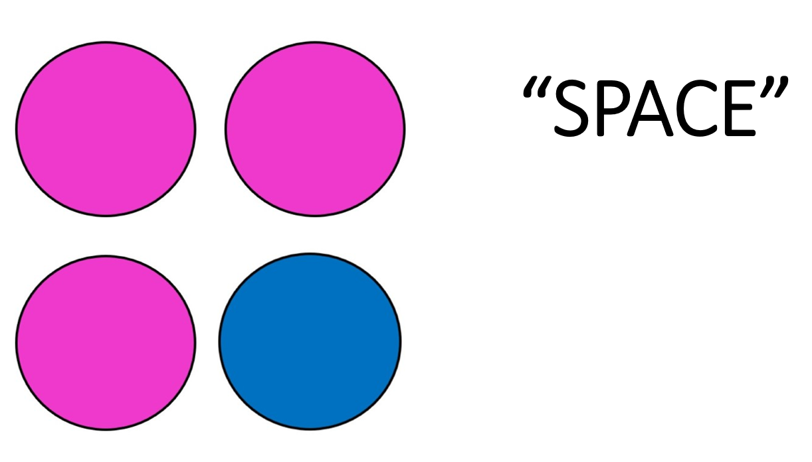

<!DOCTYPE html>
<html>
  <head>
    <title>Pilot TloadDback</title>
    <script src="js/jspsych/jspsych.js"></script>
    <script src="js/jspsych/plugins/jspsych-fullscreen.js"></script>
    <script src="js/jspsych/plugins/jspsych-instructions.js"></script>
    <script src="js/jspsych/plugins/jspsych-html-keyboard-response.js"></script>
    <script src="js/jspsych/plugins/jspsych-html-keyboard-multi-response.js"></script>
    <script src="js/jspsych/plugins/jspsych-image-keyboard-response.js"></script>
    <script src="js/jspsych/plugins/jspsych-html-button-response.js"></script>
    <script src="js/jspsych/plugins/jspsych-survey-multi-choice.js"></script>
    <script src="js/jspsych/plugins/jspsych-survey-likert.js"></script>
    <script src="js/jspsych/plugins/jspsych-survey-text-beta-6.1.js"></script>
    <script src="js/jspsych/plugins/jspsych-preload.js"></script>
    <script src="js/jquery-1.7.1.min.js"></script> <!-- the jquery library is used to communicate with the server (to store the data) through "AJAX" and PHP -->
    <script src="js/bowser.js"></script>  <!-- <script src="configurations/UPPSP.js"></script> -->
    <script scr="otherJS/jquery-1.7.1.min.js"></script>
    <link href="js/jspsych/css/jspsych.css" rel="stylesheet" type="text/css">
  </head>
  <body></body>
  <script>

//// THIS VERSION has switch
 
    /********************************************************
    define some variables
    ********************************************************/
    var startTime, endTime;
    var pic;
    var sequence = [];

    /* create timeline */
    var timeline = [];

    Nrepeats= 1; //this is not that important, since the experiment will always end after exp_duration. more for playing with the code
    trial_gap = 0; // post trial gap in ms
    trial_dur= 1500; // trial duration in ms, this starts the same as with Borrogan et al. (2017)
    var accuracy_percentage = [1, 0.85, 0.75, 0.7, 0.65]; //possible percentages for pilot accuracy
    var exp_duration= 5; // how many minutes experiment may last. 
    var how_many_back = 2; // this is an N-back task
    var repeat = true;

    // is the experiment running from a server or not? (this determines if data is saved on server or offline)
    if (document.location.host) { // returns your host or null
      var online = true;
    } else {
      var online = false;
    };

    // custom function to round to 2 decimals
    function roundToTwo(num) {
      return +(Math.round(num + "e+2")  + "e-2");
    }


    /*********** define images used ***********/

    // different colored balls
    var images = ['img/blue.png', 'img/red.png', 'img/yellow.png', 'img/green.png', 'img/pink.png', 'img/purple.png', 'img/black.png', 'img/white.png'];
    // different pictures (big and small ones)
    var pics = ['img/comb.png', 'img/glass.png', 'img/pear.png', 'img/key.png','img/elephant.png', 'img/house.png', 'img/truck.png', 'img/plane.png'];
    // all images that will be preloaded at start experiment
    var all_images =[images, pics];

    /********************************************************
    define the individual events that make up the experiment
    ********************************************************/


    /*************  WELCOME DEMO   ******************/

        /** Name + put out music **/
    // End the experiment if browser is not Chrome or Firefox
    var welcome_message = ['<h3>Welcome to this experiment</h3>' + '<p> Put out music and other distractions</p>'];
    var not_supported_message = ['<p>This experiment requires the Chrome or Firefox webbrowser.</p>'];

    var welcome = {
      type: "instructions",
      pages: welcome_message,
      show_clickable_nav: true,
      button_label_next: "Next",
      on_start: function(trial){
        if (bowser.name == 'Firefox' || bowser.name == 'Chrome'){
          trial.pages = welcome_message;
        } else {
          trial.pages = not_supported_message;
          setTimeout(function(){location.href="html/not_supported.html"}, 2000);
        }
      },
      on_finish: function(data) {
        var subjID = jsPsych.randomization.randomID(); // generate random ID to be used in file name
          jsPsych.data.addProperties({
            subjID: subjID
       });
      }
    };

    /** age + nationality **/
    var age_nationality = {
      type: 'survey-text',
      questions: [
        {prompt: "Age"},
        {prompt: "Nationality"}],
      on_finish: function(data) {
        var responses = JSON.parse(data.responses);
        var age = responses.Q0;
        var nationality = responses.Q1;
        jsPsych.data.addProperties({
          age: age,
          nationality: nationality
        });
      }
    };

    /** fullscreen mode **/
    var fullscreen_mode = {
      message: ["<p>The experiment will go to fullscreen mode when you press 'Next'.</p>"],
      button_label: 'Next',
      type: 'fullscreen',
      fullscreen_mode: true
    };
 
    /** instructions **/

    var instructions = {
      type: "instructions",
      pages: ['<div style="width: 800px;">'+
        '<h1>Instructions</h1>'+
        '<h2>How will the experiment work? </h2>'+
        '<p>Throughout this experiment you will see a series'+
        'of coloured balls and pictures</p>'+
        '<h3>Pictures </h3>'+
        '<p>There will be pictures of small and big objects </p>'+
        '<p> if the object is <span style="font-weight: bold;">SMALL</span> (pear, key, glass or comb): <span style="font-weight: bold;">Press J</span> with your <span style="font-weight: bold;">RIGHT hand. </span></p>'+
        '<p> if the object is <span style="font-weight: bold;">BIG</span> (house, elephant, plane or truck): <span style="font-weight: bold;">Press F</span> with your <span style="font-weight: bold;">RIGHT hand.</span></p>'+
        '</img>',
        '<div style="width: 800px;">'+
        '<h1>Instructions</h1>'+
        '<h3>Balls </h3>'+
        '<p>The coloured Balls will either be the same or a different colour than the ball before. </p>'+
        '<p> if the ball is the <span style="font-weight: bold;">same</span> colour <span style="font-weight: bold;">Press SPACE </span> with your <span style="font-weight: bold;"> LEFT hand. </span></p>'+
        '<p> if the ball is a <span style="font-weight: bold;">different</span> colour, <span style="font-weight: bold;">do nothing</span></p>'+
        '</img>',
        '<h3>IMPORTANT! </h3>'+
        '<p>The stimuli appear on the screen during a limited amount of time </p>'+
        '<p>It is essential to remain focused on the task and to respond as fast as possible  </p>'],
      show_clickable_nav: true,
      on_finish: function (data) {
        accuracy_percentage = jsPsych.randomization.sampleWithReplacement(accuracy_percentage, 1); // choose random accuracy percentage
        startTime = new Date(); //start clock
      },
    };

    /** paste consent_demo together with different events **/
    var consent_demo = {timeline: [welcome, age_nationality, fullscreen_mode, instructions]}


    /**************  ACTUAL EXPERIMENT ***************/


    var pic_trial = {
      type: 'image-keyboard-response',
      stimulus: function (){
        var randomKey = Math.floor(Math.random() * 8);
        var pic = pics[randomKey];
        sequence.push(pic);
      return pic},
      choices: ['f', 'j'],
      trial_duration: trial_dur,
      post_trial_gap: trial_gap,
      response_ends_trial: false,
      data: {
        phase:'test',
      },
      on_finish: function(data){
        console.log('pic:',data.stimulus);
        if (data.stimulus=='img/comb.png'||data.stimulus=='img/glass.png'||data.stimulus=='img/pear.png'||data.stimulus=='img/key.png'){data.correct_response= 'j'
        } else {data.correct_response= 'f'};
        console.log('pic_correct_response:',data.correct_response);
        console.log('resonse:',data.response);
        var acc_pic_trial = false;
        if (data.response == data.correct_response) {
          acc_pic_trial = true;
        }
        data.accuracy_pic_trial= acc_pic_trial;//we record accuracy for pic trials seperately because of the weighted formula to determine accuracy percentage
        data.accuracy = acc_pic_trial; //we record if correctly answered for the error message
        console.log('accuracy:',data.accuracy_pic_trial);
        var last_trials = jsPsych.data.get().filter({phase:'test'}).last(data.trial_index);
        var n_pic_correct = last_trials.filter({accuracy_pic_trial:true}).count(); //gives number of correctly answered pic trials
        var perc_pic = n_pic_correct - (n_pic_correct * 0.3) // pics only count for 35% of the weighted score for accuracy
        var n_color_correct = last_trials.filter({accuracy_color_trial:true}).count(); // gives number of correctly answered color trials
        var perc_color = n_color_correct + (n_color_correct * 0.3) // color trials count for 65%
        data.prop_correct= roundToTwo((perc_pic + perc_color)/(data.trial_index-3)); // calculate the percentage of success
        if (data.prop_correct >accuracy_percentage) { //if it is more than (accuracy_percentage), then the duration of the trial gets shorter
          trial_dur = trial_dur - 100
        } else if (data.prop_correct <accuracy_percentage) {
          trial_dur= trial_dur // if it is under accuracy_percentage, trial duration stays the same
        };
        console.log('trial index:', data.trial_index-3)
        console.log ('accuracy_percentage:',accuracy_percentage);
        console.log('prop_correct:',data.prop_correct);
        console.log ('trial_dur:',trial_dur);
      }
    };

    
    /** color trial **/
    var color_stimuli = [  
       {match: true, correct_resp:' '},
       {match: false, correct_resp: null}
     ];

    var color_trial = {
      type: 'image-keyboard-response',
      stimulus: function() {
        if(sequence.length < how_many_back){
          var pic = jsPsych.randomization.sampleWithoutReplacement(images, 1)[0] //pick a random image
        } else {
          if(jsPsych.timelineVariable('match', true) == true){ //on match trials, the pic is the same as the pic (how_many_back)
            var pic = sequence[sequence.length - how_many_back];
          } else { // on non-match trials, pic is DIFFERENT image
            var possible_images = jsPsych.randomization.sampleWithoutReplacement(images, 2);
            if(possible_images[0] != sequence[sequence.length - how_many_back]){
              var pic = possible_images[0];
            } else {
              var pic = possible_images[1];
            }
          }
        }
        sequence.push(pic);
        return pic
      },
      choices: [' '], // SPACEBAR
      trial_duration: trial_dur,
      post_trial_gap: trial_gap,
      response_ends_trial: false,
      data: {
        match: jsPsych.timelineVariable('match'),
        phase: 'test',
        correct_resp: jsPsych.timelineVariable('correct_resp'),
      },
      on_finish: function(data){
        var acc_color_trial = false;
        if (data.response == data.correct_resp ) {
          acc_color_trial= true;
        }
        data.accuracy_color_trial= acc_color_trial;
        data.accuracy= acc_color_trial;
        console.log('correct_resp:',data.correct_resp);
        console.log('response:',data.response);
        console.log('accuracy:',data.accuracy);
        var last_trials = jsPsych.data.get().filter({phase:'test'}).last(data.trial_index); // get data from last trials
        var n_pic_correct = last_trials.filter({accuracy_pic_trial:true}).count(); //gives number of correctly answered pic trials
        var perc_pic = n_pic_correct - (n_pic_correct * 0.3) // pics only count for 35% of the weighted score for accuracy
        var n_color_correct = last_trials.filter({accuracy_color_trial:true}).count(); // gives number of correctly answered color trials
        var perc_color = n_color_correct + (n_color_correct * 0.3) // color trials count for 65%
        data.prop_correct= roundToTwo((perc_pic + perc_color)/(data.trial_index-3)); // calculate the percentage of success. trial_index starts at 4.
        if (data.prop_correct > accuracy_percentage) { //if it is more than (accuracy_percentage), then the duration of the trial gets shorter
          trial_dur = trial_dur - 100
        } else if (data.prop_correct <accuracy_percentage) {
          trial_dur= trial_dur // if it is under accuracy_percentage, trial duration stays the same
        };
        console.log('trial index:', data.trial_index-3)
        console.log('pic_correct:',n_pic_correct);
        console.log('color_correct:',n_color_correct);
        console.log('pic_perc:',perc_pic);
        console.log('color_perc:',perc_color);
        console.log('prop_correct:',data.prop_correct);
        console.log ('trial_dur:',trial_dur);
        endTime = new Date();
        var timeDiff = endTime - startTime;
        var minutes = roundToTwo(timeDiff/60000);
        console.log('minutes passed:',minutes);
        data.minutes = minutes;
        if (minutes > exp_duration){
          repeat = false
        };
        console.log('repeat:',repeat);
      }
    }

    // /** error message **/
    //message to inform participant of a mistake
    var feedback_message = {
      type: 'html-keyboard-response',
      stimulus: '<span style="color:red;font-size:50px;font-weight: bold;">WRONG!</span>',
      choices: jsPsych.NO_KEYS,
      trial_duration: 200
    };
    
    //conditional to determine whether or not to display message based on accuracy trial
    var feedback_cond = {
      timeline: [feedback_message],
      conditional_function: function() {
        var accuracy = jsPsych.data.getLastTrialData().values()[0].accuracy;
        var trial_index = jsPsych.data.getLastTrialData().values()[0].trial_index;
        // console.log('accuracy:', accuracy);
        // console.log('trial_index:', trial_index);
        if(accuracy==true) {
          return false;
        } else if (trial_index<8) {// never give error message during first 4 trials. trial_index starts at 4.
          return false;
        } else if (accuracy==false){
          return true
        }
      }
    };
    
    /** construct timeline **/


    var n_back_sequence = {
      timeline: [pic_trial,feedback_cond, color_trial, feedback_cond],
      timeline_variables: color_stimuli,
      randomize_order:true,
      repetitions: Nrepeats,
      sample: {
        type: 'with-replacement',
        size: images.length,
        weights: [2, 1]
      },
      loop_function: function(){ // return true to go to next trial
        if (repeat == true) {
          return true
        } else {
          return false
        }
      }
    }


    /*********** END EXPERIMENT ***********/

    /** final debrief **/
    var final_debrief = {
      type: 'html-keyboard-response',
      stimulus: 'none',
      on_start: function(final_debrief){
        final_debrief.stimulus = "<p>Dit is het einde van het experiment. Bedankt voor uw deelname!</p>" +
        "<p>In deze studie zijn we geïnteresseerd in het manipuleren van mentale vermoeidheid</p>" +
        "<p>We zullen analyseren hoe dit samenhangt met uw prestaties op de psychomotor vigilance task.</p>" +
        "<p>U bent enorm bedankt voor uw bijdrage in dit onderzoek. Indien u nog vragen hebt, contacteer dan de onderzoeker: sofie.raeymakers@ugent.be</p>";
      },
      choices: jsPsych.NO_KEYS
    };
    

    /********************************************************
      run the experiment
    ********************************************************/

    // add individual events to the timeline variable
    timeline.push (consent_demo);
    timeline.push(n_back_sequence);
    // timeline.push(final_debrief);

    // /**** function that appends data to an existing file (or creates the file if it does not exist) *****/
    // function appendData(filename, filedata) {
    //   $.ajax({ // make sure jquery-1.7.1.min.js is loaded in the html header for this to work
    //     type: 'post',
    //     cache: false,
    //     url: 'php/save_data_append.php', // IMPORTANT: change the php script to link to the directory of your server where you want to store the data!
    //     data: {
    //       filename: filename,
    //       filedata: filedata
    //     },
    //   });
    // };


    // add the data that need to be saved
    var data_string = '';

    /* start the experiment */
    jsPsych.init({
        timeline: timeline,
        preload_images: all_images,
      // see if participants are switching tabs/apps
      on_interaction_data_update:function(data){
        jsPsych.data.get().addToLast(data);
      },
      exclusions: {
        min_width: 800,
        min_height: 600
      },
      on_data_update: function(data){
      if (online){
        var subjID = jsPsych.data.get().last(1).values()[0]['subjID']; // get subjectID
        if (data.trial_index == 2){ // write header
          var data_row = "name_surname, age, nationality, trial_index, stimulus, response, match, correct_resp, accuracy, prop_correct, minutes\n";
          appendData('PilotTloadDback_main'+ subjID +'.csv', data_row);
        }

        // append data when the task property in data is 'test'
        if (data.phase == 'test'){
          var data_row = data.name_surname + ',' + data.age + ',' + data.nationality + ',' + data.trial_index + ',' +
                         data.stimulus + ',' + data.response + ',' + data.match + ',' + data.correct_resp + ',' + data.accuracy + ',' +
                         data.prop_correct + ',' + data.minutes + '\n';
          appendData('PilotTloadDback_main_'+ subjID +'.csv', data_row);
        }
      }
    },
        on_finish: function() { //if not online it will save all data locally
        if (!online){
          jsPsych.data.get().localSave('csv','mydata.csv');
          jsPsych.data.displayData();
        }
    }
    });
  </script>
</html>
